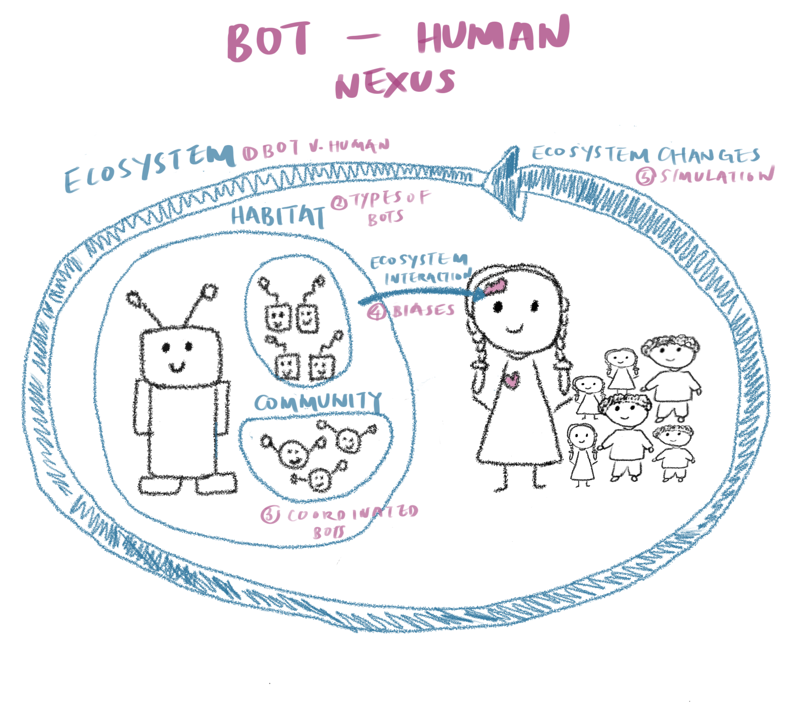

Social media platforms are digital environments in which two key species inhabit: bots and humans. Bots are automated accounts that have been observed to affect businesses, country-wide elections, healthcare discourse and even the entertainment sphere.
A long string of efforts have been dedicated to detection social media bots. However, common approaches are constrained by their binary classification of bot/human users. This binary classification scheme collapses the diverse variations of bots into a single class, and collectively group bots as malicious digital actors. These assessments focus on a one-dimensional view of bots and thus lose the nuance of the variations within the bot species, and the dynamic intra- and inter-species interactions.
This thesis approaches the bot-human nexus as two unique and dynamic organisms interacting within the social media space. The heart of this thesis examines two questions: How do bots and humans co-exist in the social media landscape? Are there different types of bots in social media and do they have unique characteristics? Within this thesis, I leverage on computational social science and network science methods to characterize the bot species and its interaction with humans.
At the ecosystem level, I use linguistic and network methods to differentiate between a bot and a human, and characterize the similarities and differences between the two species in terms of the type of language used, the expression of social identities and emotions, and their network communication structures.
At the habitat level, I analyze bot detection models and showcase the diverse bot types through a typology of bots. This expands the detection of social media bots to provide details into bot detection algorithms and the types and mechanics of the bot species.
At the community level, I build on current research on synchronization on social media to analyze intra-species interactions through three dimensions: temporal, narrative and image coordination, which results in groups of bots deliberately spreading a specific message.
At the ecosystem interaction level, I analyze how bots capture the hearts of humans through cognitive biases. Through empirical observations, I profile the tactics, techniques and procedures.
Finally, I observe ecosystem changes by connecting both bot and human activity through a social influence model. This model simulates the changes in the ecosystem and towards each species in terms of their expressed opinion towards a topic, investigating whether the ecosystem can eventually find a balance.
Collectively, these contributions enhance our social scientific understanding of the nature, interactions and impact of social media bots, and underscore the importance of theoretically informed computational methods to observe and engage this unique species.